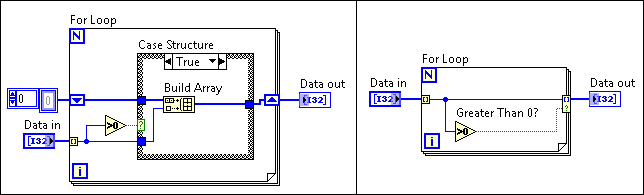

You can determine what values LabVIEW writes to the loop output tunnel based on a condition you specify by right-clicking the loop output tunnel and selecting Tunnel Mode»Conditional from the shortcut menu.
The Conditional menu item simplifies the block diagram. For example, the following block diagram shows how the Conditional output tunnel from the right diagram accomplishes the same goal as the Case structure from the left diagram.

You can select the Conditional menu item for any tunnel mode. The following table shows the effects of selecting the Conditional menu item for each tunnel mode.
| Tunnel Mode | Result |
| Last Value | Conditionally stores the last value from the last loop iteration in the tunnel. Reading the last value is useful when determining what value was last written to a Feedback Node. |
| Indexing | Conditionally indexes elements into the array. |
| Concatenating | Conditionally appends all inputs in order, forming an output array of the same dimension as the array input wired. |
Refer to the Loop Tunnel Modes VI in the labview\examples\Structures\Shift Registers and Tunnels directory for an example of conditionally writing values to loop output tunnels.